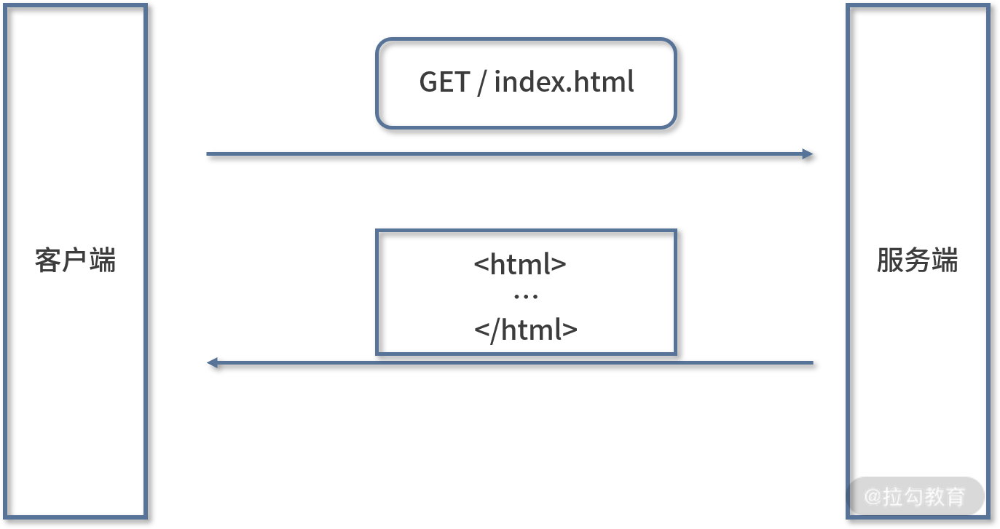
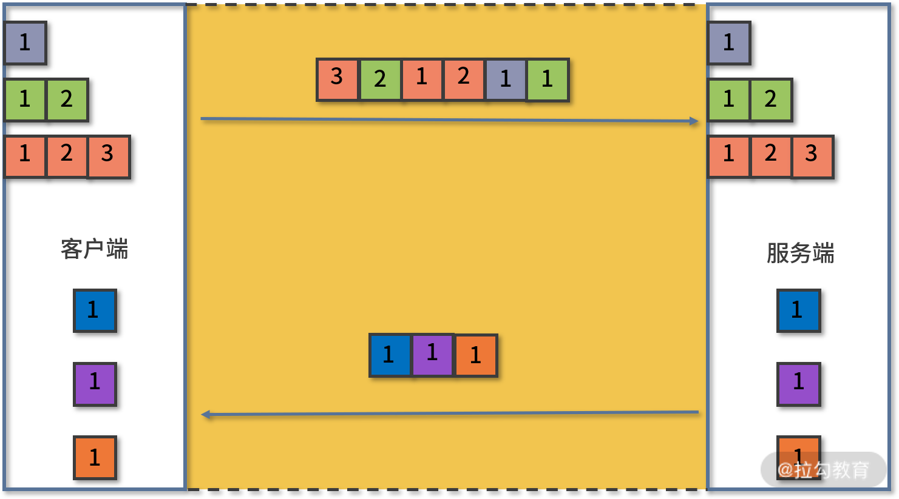

要点：Promise
HTTP（HyperText Transfer Protocol，超文本传输协议）是浏览器与服务端之间最主要的通信协议，这一课时主要分析 HTTP 及其相关协议的特点。
HTTP/0.9
1991 年 HTTP 正式诞生，当时的版本是 0.9，从名字可以看出，该协议的作用是传输超文本内容 HTML。
协议定义了客户端发起请求、服务端响应请求的通信模式。请求报文内容只有 1 行，为 GET 加上请求的文件路径。服务端收到请求后返回一个以 ASCII 字符流编码的 HTML 文档。

HTTP/0.9 通信示意图
HTTP/1.0
随着互联网的发展以及浏览器的出现，单纯的文本内容已经无法满足用户需求了，浏览器希望通过 HTTP 来传输脚本、样式、图片、音频和视频等不同类型的文件。
所以在 1996 年 HTTP 更新的 1.0 版本中，针对上述问题，作出了重大改变。
其中最核心的改变是增加了头部设定，头部内容以键值对的形式设置。请求头部通过 Accept 字段来告诉服务端可以接收的文件类型，响应头部再通过 Content-Type 字段来告诉浏览器返回文件的类型。
这同时也是一个相当具有前瞻性的设计，因为头部字段不仅用于解决不同类型文件传输的问题，而且其他很多功能也可以依靠头部字段实现，比如缓存、认证信息。

HTTP/1.0 通信示意图
HTTP/1.1
随着互联网的迅速发展，HTTP/1.0 也已经无法满足需求，最核心的就是连接问题。具体来说就是 HTTP/1.0 每进行一次通信，都需要经历建立连接、传输数据和断开连接三个阶段。当一个页面引用了较多的外部文件时，这个建立连接和断开连接的过程就会增加大量网络开销。
为了解决这个问题，1999 年推出的 HTTP/1.1 版本增加了一个创建持久连接的方法。主要实现是当一个连接传输完成时，并不是马上进行关闭，而是继续复用它传输其他请求的数据，这个连接保持到浏览器或者服务器要求断开连接为止。

HTTP/1.1 通信示意图
延伸 1：TCP 是怎样建立/断开连接的？
因为 HTTP 是基于 TCP 实现的，所以这里扩展一下 TCP 建立连接以及断开连接的过程，也就是常常被提的“三次握手”和“四次挥手”。
三次握手
在建立 TCP 连接之前，客户端和服务器之间会发送三次数据，以确认双方的接收和发送能力，这个过程称为三次握手（Three-way Handshake）。
三次握手的具体过程如下所示。
第一次握手：刚开始客户端处于 CLOSED 的状态，服务端处于 LISTEN 状态。客户端给服务端发送一个 SYN 报文，并指明客户端的初始化序列号 ISN，此时客户端处于 SYN_SEND 状态。
第二次握手：当服务器收到客户端的 SYN 报文之后，会以自己的 SYN 报文作为应答，并且也指定了自己的初始化序列号 ISN。同时会把客户端的 ISN + 1 作为 ACK 的值，表示自己已经收到了客户端的 SYN，此时服务器处于 SYN_REVD 的状态。
第三次握手：当客户端收到 SYN 报文之后，会发送一个 ACK 报文，当然，也同样把服务器的 ISN + 1 作为 ACK 的值，表示已经收到了服务端的 SYN 报文，此时客户端处于 ESTABLISHED 状态。服务器收到 ACK 报文之后，也处于 ESTABLISHED 状态，此时，双方成功建立起了连接。
TCP 三次握手
为什么建立连接的时候需要进行三次握手呢？
分别看看每次握手的目的就能知道了。第一次握手成功让服务端知道了客户端具有发送能力，第二次握手成功让客户端知道了服务端具有接收和发送能力，但此时服务端并不知道客户端是否接收到了自己发送的消息，所以第三次握手就起到了这个作用。经过三次通信后，服务端和客户端都确认了双方的接收和发送能力。
利用 Wireshark 抓包 TCP 三次握手
四次挥手
当客户端和服务端断开连接时要发送四次数据，这个过程称之为四次挥手。
四次挥手的具体过程如下所示。
第一次挥手：在挥手之前服务端与客户端都处于 ESTABLISHED 状态。客户端发送一个 FIN 报文，用来关闭客户端到服务器的数据传输，此时客户端处于 FIN_WAIT_1 状态。
第二次挥手：当服务端收到 FIN 之后，会发送 ACK 报文，并且把客户端的序列号值加 1 作为 ACK 报文的序列号值，表明已经收到客户端的报文了，此时服务端处于 CLOSE_WAIT 状态。
第三次挥手：如果服务端同意关闭连接，则会向客户端发送一个 FIN 报文，并且指定一个序列号，此时服务端处于 LAST_ACK 的状态。
第四次挥手：当客户端收到 ACK 之后，处于 FIN_WAIT_2 状态。待收到 FIN 报文时发送一个 ACK 报文作为应答，并且把服务端的序列号值 +1 作为自己 ACK 报文的序列号值，此时客户端处于 TIME_WAIT 状态。等待一段时间后会进入 CLOSED 状态，当服务端收到 ACK 报文之后，也会变为 CLOSED 状态，此时连接正式关闭。
TCP 四次挥手
为什么建立连接只通信了三次，而断开连接却用了四次？
因为当服务端收到客户端的 FIN 报文后，发送的 ACK 报文只是用来应答的，并不表示服务端也希望立即关闭连接。
当只有服务端把所有的报文都发送完了，才会发送 FIN 报文，告诉客户端可以断开连接了，因此在断开连接时需要四次挥手。
利用 Wireshark 抓包 TCP 四次挥手
HTTP/2
HTTP/1.1 虽然通过长连接减少了大量创建/断开连接造成的性能消耗，但由于它的并发能力受到限制，所以传输性能还有很大提升空间。
为什么说 HTTP/1.1 的并发能力受限呢？主要表现在两个方面：
- 浏览器为了减轻服务器的压力，限制了同一个域下的 HTTP 连接数，即 6 ~ 8 个，所以在 HTTP/1.1 下很容易看到资源文件等待加载的情况，对应优化的方式就是使用多个域名来加载图片资源；
- HTTP/1.1 本身的问题，虽然 HTTP/1.1 中使用持久连接时，多个请求能共用一个 TCP 连接，但在一个连接中同一时刻只能处理一个请求，在当前的请求没有结束之前，其他的请求只能处于阻塞状态，这种情况被称为 “队头阻塞” 。
正是出于这个问题，在 2015 年正式发布的 HTTP/2 中新增了一个二进制分帧的机制来提升传输效率。
HTTP/2 将默认不再使用 ASCII 编码传输，而是改为二进制数据。客户端在发送请求时会将每个请求的内容封装成不同的带有编号的二进制帧，然后将这些帧同时发送给服务端。服务端接收到数据之后，会将相同编号的帧合并为完整的请求信息。同样，服务端返回结果、客户端接收结果也遵循这个帧的拆分与组合的过程。
受益于二进制分帧，对于同一个域，客户端只需要与服务端建立一个连接即可完成通信需求，自然也不再受限于浏览器的连接数限制了，这种利用一个连接来发送多个请求的方式称为“多路复用”。

HTTP/2 通信示意图
HTTP/2 也增加了一些其他的功能，比如通过压缩头部信息来减少传输体积，以及通过服务推送来减少客户端请求。相对而言，二进制分帧属于核心功能，所以其他功能就不做详细介绍了，有兴趣的话可以查看具体规范。
通过开发者工具查看 HTTP/2 请求
延伸 2：HTTPS 原理
HTTP 虽然能满足客户端与服务端的通信需求，但这种使用明文发送数据的方式存在一定的安全隐患，因为通信内容很容易被通信链路中的第三方截获甚至篡改。那么怎么解决这个安全问题呢？
对称加密
当然是对通信数据进行加密传输。加密方式分为对称加密和非对称加密，最大的区别在于，对称加密在加/解密过程中使用同一个密钥，而非对称加密使用不同的密钥进行加/解密。在性能方面，对称密钥更胜一筹，所以可以使用对称密钥。
但是肯定不能在每次通信中都使用同一个对称密钥，因为如果使用同一个密钥，任何人只要与服务端建立通信就能获得这个密钥，也就可以轻松解密其他通信数据了。所以应该是每次通信都要随机生成。
非对称加密
由于不可能保证客户端和服务端同时生成一个相同的随机密钥，所以生成的随机密钥需要被传输，这样的话在传输过程中也会存在被盗取的风险。
要解决这个问题还需要通过将密钥加密来进行传输。除了前面提到的对称加密，我们只有非对称加密这个选项了，比如客户端通过公钥来加密，服务端利用私钥来解密。
证书机制
同样的问题也会出现，密钥对生成后，该怎么分发呢？
如果在客户端生成密钥对，把私钥发给服务端，那么服务端需要为每个客户端保存一个密钥，这显然是不太现实的。所以只能由服务端生成密钥对，将公钥分发给需要建立连接的客户端。
直接发送给客户端还是会被篡改，此时只能借助第三方来实现了，比如证书机制。
具体来说就是把公钥放入一个证书中，该证书包含服务端的信息，比如颁发者、域名、有效期，为了保证证书是可信的，需要由一个可信的第三方来对证书进行签名。这个第三方一般是证书的颁发机构，也称 CA（Certification Authority，认证中心）。
那么这个证书的签名怎么检验真假呢？
要回答这个问题先要理解证书签名的过程。证书签名就是将证书信息进行 MD5 计算，获取唯一的哈希值，然后再利用证书颁发方的私钥对其进行加密生成。
校验过程与之相反，需要用到证书颁发方的公钥对签名进行解密，然后计算证书信息的 MD5 值，将解密后的 MD5 值与计算所得的 MD5 值进行比对，如果两者一致代表签名是可信的。所以要校验签名的真伪，就需要获得证书颁发方的公钥，这个公钥就在颁发方的证书中。
这种通过签名来颁发与校验证书的方式会形成一个可追溯的链，即证书链。处于证书链顶端的证书称为根证书，这些根证书被预置在操作系统的内部。
通过浏览器查看证书链
上面所述的颁发证书与加密机制就是 HTTPS 的实现原理。
HTTP/3
当然 HTTP/2 也并非完美，考虑一种情况，如果客户端或服务端在通信时出现数据包丢失，或者任何一方的网络出现中断，那么整个 TCP 连接就会暂停。
HTTP/2 由于采用二进制分帧进行多路复用，通常只使用一个 TCP 连接进行传输，在丢包或网络中断的情况下后面的所有数据都被阻塞。但对于 HTTP/1.1 来说，可以开启多个 TCP 连接，任何一个 TCP 出现问题都不会影响其他 TCP 连接，剩余的 TCP 连接还可以正常传输数据。这种情况下 HTTP/2 的表现就不如 HTTP/1 了。
2018 年 HTTP/3 将底层依赖的 TCP 改成 UDP，从而彻底解决了这个问题。UDP 相对于 TCP 而言最大的特点是传输数据时不需要建立连接，可以同时发送多个数据包，所以传输效率很高，缺点就是没有确认机制来保证对方一定能收到数据。

通过开发者工具查看 HTTP/3 请求
总结
理解 HTTP 对于前端工程师而言非常重要，无论是性能优化还是开发设计 Web 应用都离不开 HTTP，本课时总结了 HTTP 各个版本的核心改进以及解决的问题，同时深入 HTTP 底层依赖 的 TCP，讲解了 TCP 建立和断开连接的过程。分析了 HTTPS 如何通过证书机制以及加密方式来保障通信数据的安全。
下面总结一张表格方便你的理解和记忆：
| 协议版本 | 解决的核心问题 | 解决方式 |
|---|---|---|
| 0.9 | HTML 文件传输 | 确立了客户端请求、服务端响应的通信流程 |
| 1.0 | 不同类型文件传输 | 设立头部字段 |
| 1.1 | 创建/断开 TCP 连接开销大 | 建立长连接进行复用 |
| 2 | 并发数有限 | 二进制分帧 |
| 3 | TCP 丢包阻塞 | 采用 UDP 协议 |
最后布置一道思考题：HTTP 解决了客户端向服务端请求和提交数据的问题，如果服务端要主动将数据推送到客户端，你知道有哪些解决方案吗？
Tips: Please indicate the source and original author when reprinting or quoting this article.